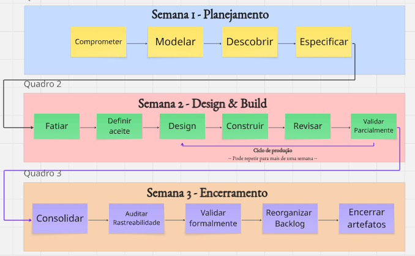

5. Cronograma e Entregas¶
Histórico de Revisão¶
| Versão | Data | Descrição | Autor(es) |
|---|---|---|---|
| 1.0 | 11/04/2026 | Criação do cronograma de sprints | Lucas A. Zanetti |
| 1.1 | 13/04/2026 | Revisão da seção 5 | Equipe Crianex |
| 1.2 | 04/05/2026 | Atualização do cronograma para Processo Híbrido (Iterações) | Heitor |
| 1.3 | 05/05/2026 | Reestruturação completa: ciclo de vida, cadência semanal e marcos de validação | Lucas A. Zanetti |
| 1.4 | 05/05/2026 | Seções 5.1 e 5.4 convertidas para fluxogramas Mermaid | Lucas A. Zanetti |
5.1 O Ciclo de Vida de uma Feature¶
Toda Feature percorre um fluxo padronizado, do primeiro insight até a entrega validada. Não há atalhos: cada etapa depende da conclusão da anterior.
Regras invioláveis do fluxo¶
| Regra | Descrição |
|---|---|
| Sem atalhos | Uma issue não pode pular colunas no Kanban (ex.: In Progress direto para Done). |
| WIP limit é lei | Máx. 2 issues In Progress por Class Owner. Ao atingir o limite, ajude a destravar antes de iniciar uma nova. |
| Design antes de código | Nenhuma linha de código é escrita sem Technical Design Review e critérios de aceite definidos. |
| Entrega contínua | Features são entregues a Otavio conforme ficam prontas — não há espera pela data da unidade acadêmica. |
| Rastreabilidade mandatória | Toda issue precisa estar linkada à Feature parent no Miro e à CP correspondente no Documento de Visão. |
5.2 Roadmap de Iterações¶
O quadro abaixo apresenta os ciclos de trabalho planejados, organizados por Valor de Negócio entregue ao cliente real (Otavio Maya, CTO Crianex).
Nota: O planejamento é orientado ao Índice de Prioridade (IP = VB / PT). A ordem das CPs dentro de cada iteração pode ser reordenada conforme feedback do cliente.
| Iteração | Período | Valor de Negócio | Características de Produto | Superficial Iteration Goal | Validação |
|---|---|---|---|---|---|
| IT1 | até 26/04/2026 | Documentação Inicial e Setup | — | Levantar escopo, documentar Visão de Produto, configurar ambiente e definir arquitetura macro. | Reunião inicial com Otavio: validação de escopo, domínio e priorização do MVP. |
| IT2 | 27/04 à 17/05 | Vitrine Pública | CP2 · CP5 · CP7 · CP15 | "Qualquer visitante acessa a vitrine pública da Crianex, vê o portfólio de produtos SaaS com página institucional em PT/EN, em layout responsivo." | Partial Validation contínua. Formal Validation com demo focada em conversão e navegação. |
| IT3 | 18/05 a 07/06 | Núcleo Admin | CP1 · CP3 · CP4 | "A equipe interna acessa o CRM Kanban, o Dashboard Executivo e o painel de logs unificados a partir de um único ponto de autenticação." | Validação do cruzamento de logs e tickets; métricas operacionais com os sócios. |
| IT4 | 08/06 a 24/06 | Operação Digital | CP6 · CP8 · CP9 | "A equipe de suporte opera o sistema de atendimento e gerencia produtos SaaS com autonomia, sem depender de acesso direto ao banco." | Feedback focado na usabilidade da equipe de suporte e fluxos administrativos. |
| IT5 | 25/06 07/07 | Confiança e Consolidação | CP10 · CP11 · CP12 · CP13 · CP14 | "O MVP passa por auditoria OWASP, testes end-to-end completos e está pronto para homologação em produção." | Homologação final em ambiente de produção; aprovação formal do MVP pelo cliente. |
5.3 Cadência Semanal de uma Iteração¶
Cada iteração padrão segue uma cadência de três semanas com objetivos distintos. A IT2 é exceção — opera com Semana 1 reduzida (combinada parcialmente com Semana 2) para se ajustar ao prazo de 19/05. A IT5 é comprimida em 1 semana.
Princípio: máximo 2–3 reuniões por semana. Cerimônias relacionadas são agrupadas no mesmo dia. A validação parcial do cliente ocorre de forma assíncrona (Whatsapp/Discord); apenas a validação formal de encerramento ocorre via reunião.
Semana 1 — Planejamento e Refinamento¶
Dedicada ao alinhamento estratégico e ao refinamento de requisitos. Não há build de código além de spikes técnicos pontuais.
| Atividade | Etapa FDD | Formato |
|---|---|---|
| Iteration Replenishment + Iteration Commitment + Domain Modeling Workshop | Etapas 1–3 | Reunião |
| Feature Discovery Session (Otavio) + Feature Card Specification | Etapas 4–5 | Reunião |
| Preparação individual para slicing | Pré-Etapa 6 | Assíncrono |
Semana 2 — Build Controlado e Execução Kanban¶
O coração da execução. Todas as Features comprometidas começam a fluir pelo Kanban. A validação parcial do cliente ocorre de forma assíncrona ao fim da semana.
Nota: Essa plano pode se repetir por mais de uma semana dependendo do tempo limite da iteração.
| Atividade | Etapa FDD | Formato |
|---|---|---|
| Feature Slicing + Acceptance Criteria Review + Technical Design Review | Etapas 6–8 | Reunião |
| Kanban Pull Execution + Internal Code & Design Review + Sync diário Discord | Etapas 9–11 | Assíncrono |
| Partial Client Validation — envio de update escrito/vídeo a Otavio | Etapa 12 | Assíncrono |
Semana 3 — Consolidação, Validação e Encerramento¶
Fecha o ciclo. Features são consolidadas, rastreabilidade auditada e artefatos empacotados. Apenas o encerramento formal reúne a equipe e o cliente.
| Atividade | Etapa FDD | Formato |
|---|---|---|
| Feature Build Consolidation (smoke test) + Requirements Verification Review | Etapas 13–14 | Assíncrono |
| Preparação da demo e fechamento de PRs pendentes | — | Assíncrono |
| Formal Client Validation (demo) + Retrospectiva + Artifact Closure + Backlog Reorganization | Etapas 15–17 | Reunião |
5.4 Sequência de Execução em uma Iteração¶
A sequência abaixo apresenta a ordem obrigatória de atividades dentro de qualquer iteração, agrupada por fase. Nenhuma etapa pode ser invertida ou suprimida — desvios são registrados na retrospectiva e tratados na próxima iteração.

5.5 Marcos e Critérios de Encerramento por Iteração¶
Cada iteração só é considerada encerrada quando todos os critérios abaixo estão satisfeitos:
| # | Critério | Responsável |
|---|---|---|
| 1 | Todas as issues comprometidas estão em Done ou com justificativa de carry-over documentada. | Development Manager |
| 2 | Formal Client Validation realizada e aprovação de Otavio registrada na ata. | Responsável por Validação |
| 3 | Matriz de rastreabilidade OE → CP → VN → Feature → Issue → PR → Validação atualizada. | Documentation Lead |
| 4 | Documento de Visão (GitHub Pages) atualizado com artefatos da iteração. | Documentation Lead + PM |
| 5 | Retrospectiva realizada e lições aprendidas registradas no Miro. | Facilitador Metodológico |
| 6 | Backlog macro reordenado por IP para a próxima iteração. | Project Manager |